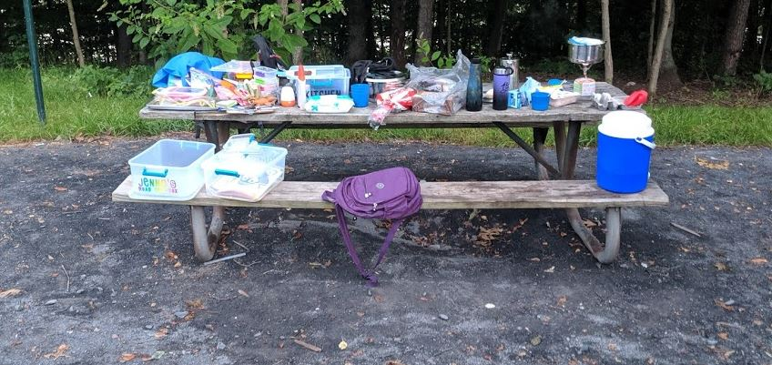
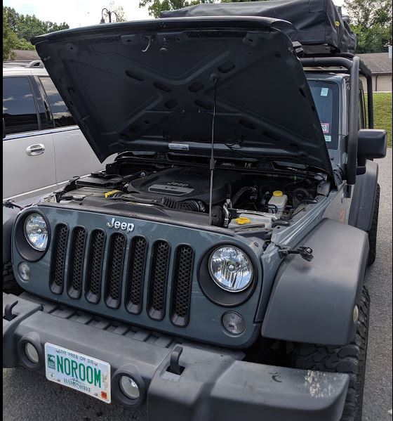
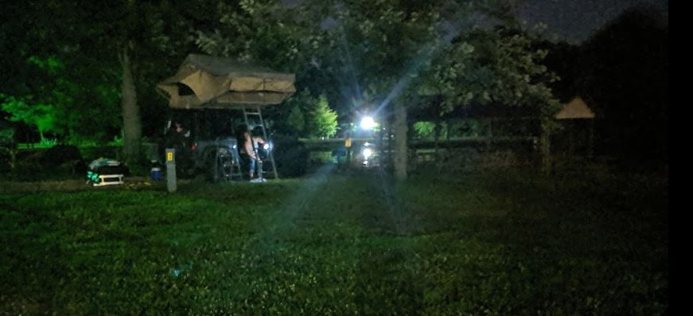

WHERE ARE THE KEYS!
Abigail and I awoke to the sounds of birds chirping, I quickly silenced my alarm clock and we enjoyed the absolute silence of the morning. Only a few times was that silence interupted by the snoring of Jenna.
It was about 4am, and the sun was just starting to peek over the horizon. Abigail and I shared one of those looks that only parents can and silently agreed to not get out of bed and let the kids sleep in. It was too dark anyways, and we wanted needed the extra sleep.
Once the sun had risen, we got out of the tent without waking the girls. I whipped out my Pocket Rocket (giggity), and started boiling water for our brekfast. The pocket rocket made quick work and we had some boiling water for eggs, oatmeal and coffee.
 Pocket Rocket in Action!
Pocket Rocket in Action!
Once the water was at full boil abigail whipped up some breakfast sandwhiches and oatmeal for the girls. While the girls were still sleeping in the tent, we decided to take all the toys out of the Jeep, and re-organize for todays adventure.
 The stuff!After breakfast we started repacking up for the day. While Abigail was fighting with Jenna to brush her hair, I was closing up the tent and packing everything away. Soon both girls were inside the jeep making a mess while we repacked the clothes and kitchen supplies.
Trials of Marriage
Every relationship has that moment where it tests the boundaries of your love for your partner. We are all human, it happens. Today we had one of those moments, it lasted about 20 minutes. We were 600 Miles from home and Abigail was busy packing the totes up so we could leave camp. Abigail was busy unlocking the boxes, getting things ready and then relocking them. After she had finished, I asked her for my Jeep key so I could get the AC going while the girls were waiting for us to finish. This when the trial of our Marriage began.
I asked Abigail for the keys so I could start the Jeep, get the AC going and get the girls situated in their carseat. The problem was, Abigail couldn't find the keys. You see attached to my Jeep key was the key for the locks we had attached to our storage totes. Abigail was locking & unlocking them while packing, and now the Jeep Key & Lock key were missing. We franticly searched for what felt like forever, started pulling the totes apart to look inside (The locks are to keep honest people honest, not to keep desperate people out!). The best part was, there was still a padlock attached to my keyring, because Abigail used it to unlock a lock.
It felt like a hour, but was probably only 5 minutes before I told Abigail it was fine, really. I brought the spare Jeep key. Worse comes to worse, we can go find someone with a bolt cutter for the totes. It wasn't the end of the world, no point in letting it ruin the start of our adventure. Well we finished packing up, put the rear cargo shelf back on the jeep. Moved the blankets and bathing suits off the Hood of the Jeep since we would be using them later that day, and found the jeep keys. Crisis averted! Whew! (We both knew that even though I said it was fine, I was stressing about the misisng keys)
The lost keys!A quiet Drive
We start each morning refilling the necessaties, Ice, Gas, Coffee and water. We left camp and headed off to a fairly relaxing drive through the country side. The first stop was at a little gas station to refill the Gas, ice and get some coffee. Whenever we stop Jenna wants to go inside with Abigail to strech her legs. I usually take this time to wash all the windows and check the various nuts and bolts on the Roof Rack. It wasn't long before Abigail & Jenna came back with coffee and some donuts (yum!).
Buying frozen water!So far most of our trip has been on an interstate, but this morning we had a nice peaceful drive through some farmland.
Moooo One of many farmsDid you know that barns are painted red because back in the day the product they used to weatherproof barns would eventually rust and turn red, now barns are mostly painted red for nostalgia. At least that's what Google told us.
West Virginia
The goal this morning was to head to a splashpad a few hours away in West Virginia. The first part was on that rolling hills, the next part was back onto the interstate.
Hey Look, a road! No clue what it is, but looked neat. Welcome to West Virginia.Before we went to the splashpad, we had a few errands to run. The first stop was to Price Cutter and get some food for tonight. We bought Bacon Cheeseburgers, and a various assortment of meats for lunch.
Price Cutter! Abigail making lunchThe next stop was to AutoZone in search of some fuses. The downside of how we are traveling is we are very dependent on our devices. At some point in the last 24 hours one of the cigarette lighters in the Jeep stopped working. This was bad, we only had two spots to charge all of our USB devices.
-
Gear to keep charged:
- iPad
- Android Tablet (Jenna's since her Amazon Fire tablet died a few weeks earlier
- Thea Cell Phone (Just some kids games to keep her distracted. Think 911, its either this or she is walking)
- Johns GoPro we borrowed
- 2 x Battery Packs
- USB Flash Light
- Abigail Phone
- My Phone (GPS)
- Laptop
so when we stopped at PriceCutter for lunch and dinner stuff, I asked the clerk if there was an Auto Parts store. He directed me to one 20 minutes away... I was about to give up. When we got back to the Jeep, ate lunch I risked turning on my phone and getting directions to this Autozone. There was one 20 minutes away, and one 5 minutes on the way to the splashpad. PHEW!
Autozone!After stopping in AutoZone to get an assortment of fuses, we headed off to the splashpad which was only a few minutes away. We were able to squeeze the jeep into a narrow parking spot while the girls went inside to play. I stayed outside in the hot sun to work on the blog (your welcome) and figure out the cigarette lighter.
Luckily it was just a blown fuse, and I was able to quickly swap it out. Some of the other fuses looked close to going, but I didn't have any replacements so it would be a problem for another day. Right now I had to finish writing the blog entry, which I did in the 97 degree weather.
 Wouldn't be a road trip without the hood open!The splashpad
Abigail, Jenna & Thea spent a hour or two at the splashpad, enjoying the water slides, bubbles, and pirate ship. I wasn't there, but Abigail told me that there was one little boy flirting with Thea, and at some point Jenna lost her shorts due to the water. Jenna said it was her favorite stop!
Pirate ship! Argh Matey! Wee! So much fun!!Ohio
Entering Ohio!After everyone was cooled off from the splashpad we were back on the road. This time we were crossing into Ohio. The plan was to skip Ohio and camp in Indiana. This was the first portion of the road trip that we really hit traffic. There was a car accident 30 miles ahead of us, and the interestate was backed up for another 50 miles behind us. We witness cars backing up the breakdown lane, and continuing up an on ramp to try and get around the traffic. After a few minutes of that, some vehicles would turn around and try to drive up the onramp. I've never seen something like that in my life.
Making a U-Turn and going backwards in traffic..We didn't get a picture of it, but later on the interstate we passed a mini-van that appeared to of been burned to the ground. Nothing but a metal frame blackened by the fire. Thankfully we were just passing through Ohio, and were soon in Indiana.
The best part of OhioIndiana
Due to the traffic, we weren't going to make our original campsite. Because this was always a possability we did not reserve a head of time, instead we pulled out the tablets and phones around 2PM and started making calls and checking websites. If everything went well, we would get there at 8:45, and they closed the office at 9. It was too close for comfort.
A few weeks ago, Wes Cobb (Abigail's Grandfather) recommened checking out the KOA. Neither Abigail or I have ever been to one, but considering how much Wes & Ruth travel we looked up the nearest one. Abigail gave them a call, and after explaining that our tent was ontop we quickly had a reservation for "Tike". Apparently PIKE is a hard name to hear over the phone, must be our New England Accent. Regardless, we had a place to sleep tonight. And it was directly next to the playground, SCORE!
Score! Burning off some energy while I setup the tentBath Time
Everyone was sweaty and gross. It had been a few days since anyone had a bath so we decided to do it tonight. The KOA had full showers but no bathtubs. Which quickly turned into everyone screaming bloody murder in the bathroom. Abigail would soap them up while I held them in the shower. Abigail would then use one of our cooking pots to wash each kid. It was slippery, messy, and we half expected someone to call the cops on us. Fortunately, nobody did and we eventually got back to the tent in one peice.
The KOA overall was a great place to stay, the only downside was the fact our power outlets did not work and we could occasionally hear traffic from the interstate.
 Night shot of the tent